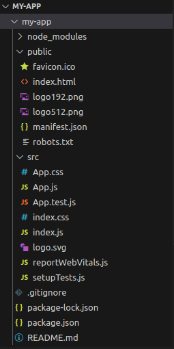
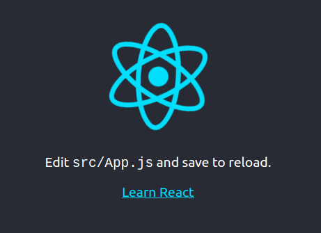

React JS Installation:
There are basically two methods for React JS Environment Setup
- Using create-react-app (faster method)
- Using webpack and babel
Method 1: Using create-react-app (CRA commond)
Step 1: Navigate to the folder where you want to create the project and open it in terminal
Step 2: In the terminal of the application directory type the following command
Step 3: Navigate to the newly created folder using the command
Step 4: A default application will be created with the following project structure and dependencies
It will install some packages by default which can be seen in the dependencies in package.json file as follows:
Step 5: To run this application type the following command in terminal
Step 6: The following output will be displayed in the browser
You can modify the application according to your preferences and change the code accordingly.
Method 2: Using webpack and babel
To setup a react development environment using webpack and babel is a long process and we have to import each package and create setup files ourselves.
We have to create the setup using ‘npm init -y’ command and then import the necessary packages in the folder and then install react using the command.
To install the necessary packages in our project use the command